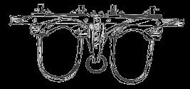

Suppose someone told you that the Exxon Corporation (formerly Esso) had developed a farm vehicle as strong as a tractor but capable of going where no ordinary tractor can . . . through waist-high snow, knee-deep mud and up and down steep, rocky hillsides. That instead of using exhaustible and irreplaceable fuels such as gasoline and kerosene, this invention ran on any high-protein vegetable matter, even grass.
That instead of noxious exhaust it produced a biodegradable substance almost unequaled as a fertilizer. And that-on top of all these other advantages-it had a life expectancy of 20 years and cost as little as $50.00 brand new, with a resale value as high as $2,000!
If you were offered such a creation, would you be willing to spend 20 minutes a day on routine maintenance? And would you accept the fact that this mobile power source has no steering wheel but works on a remote control system that requires you only to walk alongside giving voice directions?
Well, believe it or not, the O.X.EN does exist . . . but it's neither experimental nor the invention of Exxon, for it's been used successfully as long as man can remember. In fact, we own two OXEN ourselves, and I'd like to tell you about them.
Of all the hundreds of ox drivers in the northeastern United States and southeastern Canada, we may be the two least knowledgeable. Before the spring of 1972 we couldn't even have told you what an ox was or whether one existed this side of New Delhi and the history books. However, we did know that we wanted something to haul our firewood, plow our fields, bring sap to our sugar shack and, in short, pull harder than our two backs can pull. We knew also that we didn't want another internal combustion engine . . . which ruled out a tractor or any other power source that uses what cannot be replaced.
That meant some kind of draft animal . . . but which? Though we'd heard good things about mules, we knew they required yards of expensive harness. Horses have the same drawback plus a few of their own: We'd seen our friends down the road sell their beautiful pair of work horses after struggling to untangle all that leather and-even worse-after almost being killed by the high-spiritedness of their supposedly gentle team.
Well then, what about oxen? Cattle, we reasoned, might be simpler to drive than horses and-if they had to be killed-would at least provide meat; which we could use or sell to help pay for another team. Off we went to the nearest library to do some research.
We caught the librarian a little off guard, since she'd never been asked about work cattle before. When she recovered, she found that, technically, "ox" can mean any member of the Bovidae family of ruminants . . . such as cattle, sheep, goats and antelope. More commonly, though, the term is reserved for a castrated bull . . . a creature which was a common draft animal as late as the last century (see Diary of an Early American Boy by Eric Sloane).
Although we gained little further information at the library, we didn't lose interest in our project . . . and by midsummer, we'd discovered that oxen are by no means entirely a thing of the past.
Our curiosity about the draft animals went with us on several summer trips to Vermont and New Hampshire, and wherever we traveled we asked whether some old man or woman in the neighborhood could tell us how to train and drive a team. Our search was finally rewarded at a farm in Tunbridge, Vermont, where we first saw (and heard) draft cattle in action.
The animals' owners told us that-though a few oxen are still being used for farming and logging-their most common employment is for sport, in the stoneboat pulling contests at county fairs. By good fortune, such an event was scheduled the very next day at Norwich, Vermont and our new friends were among the competitors.
At the Norwich Fair-where we saw ox-pulling and had a chance to talk with drivers, see a variety of breeds and driving styles and generally soak up the whole new experience-we became convinced that we wanted a team of our own. Since we needed the animals by that fall to haul our firewood, we knew we'd have to buy a "handy" span, one not just trained to pull a stoneboat but accustomed to the more complex demands of farm work.
We quickly discovered that such an educated team was not common and would cost us $800 to $1,200 (depending to some degree on the current price of beef), plus $50.00 to $100 for a yoke and more for transportation. If we'd known how and had two years to spare, we could have raised and broken a pair of calves ourselves. But we had neither the time nor the know-how, and we did have the money . . . just enough, we reckoned.
As novices, of course, we were in a perfect position to be ripped off in a big way, and could have lost most of our savings in a bad deal. What saved us was the enthusiasm, kindness and down-home honesty of the ox drivers we met. Though they'd gathered to compete in ox-pulling and showing, they looked at the fair even more as an occasion to share their love of the animals they drove . . . with one another, and even with a couple of greenhorns like us.
The family we'd met the day before-who had three teams entered in the Norwich events-were especially helpful. They agreed to try to find a good span for us, and we arranged to return to their farm in September at the time of the four-day Tunbridge World's Fair . . . at which time, they told us, we could tent on their place and work with their teams if we'd help them cut and haul firewood. We gladly agreed, and that nine-day stay with our Vermont friends was all the practical training we had before we set out on our own.
And set out we did, because-as a consequence of this second Vermont visit-we were able to buy a team and some vital equipment at the Tunbridge Fair. So it happens that today Liz, two-year-old Rob and I, hunkered down on our homestead in upstate New Yorkmany miles from any other working ox team that we know of-are successfully and easily (though awkwardly and a little nervously at times) driving and caring for two beautiful red oxen named John and Paul.
Though we're still very far from expert, we now know a lot more about oxen than we did a few months back, and we'd like to pass on some of our own experience plus what we've learned from veteran drivers.
Though steers of any breed (or combination of breeds) will make work animals, the characteristics of the various types of cattle can be important. For instance, dairy cattle such as Ayrshires and Holsteins have longer legs and weigh less than beef Devon, Black Angus and other beef producers. Longer legs mean more leverage but not necessarily more strength. In fact, several of the strongest teams we saw were the strikingly white and massive Charolais, a beef type. Likewise, debate persists on whether horses, which have longer legs than oxen of any kind, are therefore stronger.
Differences among breeds also occur even within the category of dairy cattle . . . the beautiful long-horned dairy Devons, for example, are considerably smaller than Holsteins and Brown Swiss. As long as the oxen in a team are about the same size, however, yoking different kinds together presents no problems.
Do breeds of cattle vary in intelligence as well as in physical makeup? Though we've heard drivers discuss this point, we suspect that an ox's I.Q. (however you define it) hinges more on training and handling than on breeding. The fact is that some teams and their drivers can do a lot more than others, and do it more easily . . . and we're convinced that there's more behind this truth than mere genetics.
Of course, the most obvious difference between breeds is color . . . a fact that's handy for identification but otherwise insignificant except as a matter of personal preference. For instance, Liz and I live in Holstein dairy country and didn't want a black and white team that might be mistaken for dairy bulls. We like our span to stand out as oxen. John and Paul-bred on a New Hampshire dairy farm-are red Durhams mixed with a little Brown Swiss.
If you know how to feed and house cows-or, better still, beef cattle-then you know how to care for oxen. Like a beef steer, an ox needs only good hay, or fair hay, and grain (see the excerpt from AHerdsman's Handbook by R.J. Holliday, DVM in MOTHER NO. 18).
John and Paul each get half a bale of medium-grade hay morning and night plus a pound of grain-ground corn and oats-in the morning and two pounds each evening (more when they're working). During the grass-growing months we'll pasture the span and grain the animals only when we're working them. We water John and Paul once a day when they aren't being used, twice when they are.
Shelter for oxen can be very simple. Even here in northern New York-where winter temperatures regularly dip to minus 20° F-a team needs only a windbreak until well into December, when light snow might necessitate putting them into a building of some kind.
We're lucky enough to have an old dairy barn with a concrete floor and gutter. The gutter is good for keeping the animals out of their own manure but the concrete is hard on oxen (especially if the animals are heavy). We were told that one large Canadian team was crippled by spending an entire winter on such a surface. Exactly why concrete should be avoided we're not sure . . . certainly it's cold and hard, but dairy cows stand on it through the cold months without harm. Still, to play safe, we built open stalls with elm sides and hemlock plank floors tilted slightly to allow urine to drain away. Clay or earth underfoot is considered ideal.
Until this fall, Liz and I supposed we knew what an ox yoke looks like. But what we were accustomed to seeing was only one kind: the stationary neck yoke, in which two hickory bows slide and lock into one beam. Like the unusual horn yoke (which is worn across the forehead) large stationary neck yokes are made from strong woods such as yellow birch and ash. Such a hitch is suited for pulling heavy loads short distances, and is used almost exclusively at ox-pulling contests, where teams have hauled stoneboats weighing as much as 26,000 pounds.
When a span must walk for long periods doing logging or farm work, however, the stationary yoke doesn't allow enough freedom of movement to permit the individual ox to find his footing on broken ground. We were told that to use it in such situations would result in "hauling" (one steer leaning into the other to keep his balance) . . . a habit that reduces the coordinated strength of the team and increases the chance of injury. Consequently, the only coupling we've used so far is the sliding neck yoke, in which each bow can move from side to side independently of the other by means of pivoting irons SST , Gas Pivoting irons located at the center of the device.
It seems to me that either kind of neck yoke-stationary or sliding-wouldn't be too difficult to make, especially if yarn had the irons from an old framework. Apparently many different woods make acceptable yoke beams: cherry, tamarack root, locust, beech, oak, basswood and-naturally-hornbeam, The only taxing part of the job might be steaming and bending the hickory bows.
An alternative to making your own yokes or buying them used is to contact one of the men who still does this work to order. We know of two: Leon Blake of West Fairlee, Vermont and Arthur Hines of Terryville, Connecticut. A new yoke, including bows, costs $75.00 to $100, and a new bow alone will run about $10.00. You might find used equipment in good condition for about half that money.
Whether you make or buy a yoke, one serious defect to watch for is cracks-even hairline breaks-in the wood that comes in contact with the steer's skin. Nothing less than Iameness, it seems, makes an ox go on strike as quickly as having hair pulled from his neck. It's also important to see that the yoke-especially its bows-fits your team. These curved sections should be large enough to allow you to put a hand between the wood and the ox's neck, but small enough so that-when the animal is pulling-the bow does not rub against the front of his shoulders .
One great advantage of working with oxen is the simplicity with which they can be coupled and hitched. Even though yokes are heavy, putting one on a team is fairly easy.
To "harness up" our work animals I first tie John and Paul side by side to some stationary object (usually the side of our chicken coop). Then I pick up the yoke, walk between the oxen from the rear and stand between their shoulders, where I rest the left end of the yoke on the ground with the nuts of the reinforcing bolts facing me. Next I [1] remove the bow pin from the right bow, [2] pull out the curved piece and hook it under and around the far side of the right ox's neck, [3] insert the two ends of the "U" back into and through the beam of the yoke and [4] secure the fastening by sticking the bow pin through the protruding end of the bow nearest the center of the framework. Then I repeat the operation on the left side with the other animal. That's how I was taught to yoke a team but any way that works is probably good enough.
Though yoking is still a bit awkward for us, we learned the procedure in only a few minutes. It took a little longer, however, for my small body and the team's large ones to get used to standing so close together. Twice I was stepped on (or the oxen were stepped under). It hurt. Pain taught me also that an ox's head is as wide as the reach of his horns . . . a fact I learned one morning when a casual twist of Paul's neck left me with a bloody lip. Ox horns, by the way, are usually tipped with screw-on metal caps to prevent a team from "hooking" each other.
Oxen and horses are both hitched to a neap, the eight-to-twelve-foot-long beam of wood that extends from the front of a wagon or sled. Thus any horse-drawn equipment can be adapted for use with cattle. Instead of the whippletrees (For all you non-farmers, a whippletree is the same as a singletree, which is part of the equipment used to hitch horses and mules to wagons and other farm implements.-MOTHER) and harness needed for horses, however, you use just the bare shaft. Its tip goes through the ring on the underside of the yoke and is held in place with a wedge of wood, a steel pin or a chain. In the last case-our own method-the chain attaches to the ring and to the wagon end of the neap. (Incidentally, much of the work we do with our span-pulling stoneboats, stumps, logs and stuck trucks-is done with a chain alone and no shaft at all.)
Oxen brake by raising their heads and holding the yoke against the backs of their horns. However, for going down steep grades with a heavy load, a wagon should have its own brake (or, in the case of an iron-tired vehicle, a drag shoe). Or the team can wear britchens, long leather tumplines that attach to the yoke on either side of each ox's head and pass around behind and below their rumps. These straps let the animals lean back hard to brace their legs without falling down.
Oxen are supposed to be better than horses at picking their way through the woods and over broken ground. I dont know. It's true that-unlike horses-they don't have a whippletree to hang them up on stumps or between trees if they're dragging logs . . . but they do have the yoke to contend with and that can prove too much for the animals to figure out. More than once we've seen John and Paul brought up short when they tried to walk on opposite sides of a small tree.
John and Paul are six years old and will continue to grow for another 12 to 24 months. Today a butcher would figure their cash value on the hoof at around 35 cents a pound, so-at a combined weight of 3,600 pounds-their redeemable cash value is $1,260. This is a little more than we paid for them. Even when the oxen near the end of their useful service to us ten or twelve years from now, they will still have a marketable meat value.
Here's what is has cost us to buy, maintain and equip the span of steers:
For most people $1,736 is a fortune. Now that we've spent the money, I know it is for us. All I can say is that the cost could be cut to almost nothing-depending on your desire and resourcefulness-if you're willing to raise and break a team yourself.
If you do, try to get calves born close together, preferably from cows bred by the same bull (as with our oxen) or-if you're lucky enough-identical twins, in order to increase the chance that the mature animals will be the same size. Calves can be harnessed at three weeks (with a small yoke, of course). After that it's a matter of time and patience, practicing one command for a long time and then going on to another.
A second alternative to buying a broken team is to use only one ox, providing he's strong enough to do what you want him to do. A steer working alone uses a single yoke, but a horse collar turned upside down does as well, we're told.
If a single ox is still too much power, you could try a cow. It's been done . . . in one old photograph we saw, a farmer had the family's milk supplier hitched up to a wagon.
Oxen need to be shod only if you're planning to use them on ice or hard-surfaced roads. If you're used to seeing only horseshoes, an ox's footwear looks pretty peculiar . . . because he has cloven hoofs, the steer wears eight of the gadgets (two on each foot). To put them on you need a sling mounted on heavy timbers with which to raise the beast entirely clear of the ground.
Our team came to us shod, but have thrown most of their shoes and are doing well without them. Sometime, though, we would like to build a sling (there's one in the museum in Tunbridge) and learn to shoe Paul and John for work on ice and hard-packed snow.
Winter, by the way, is the ox's most comfortable season because of his great body heat. We're told, also, that as long as a steer can get his head above snow he'll keep going, whereas a horse will flounder. We haven't been able to test this so far ...last winter John and Paul encountered only knee-deep drifts and had no difficulty.
By long custom, the only control an ox driver has over his team is his voice. In other words, he must rely on the psychological conditioning of the animals and the day-to-day relationship he develops with them. We learned six commands: forward ("here", "giddyup", or whatever you prefer), left ("haw"), right ("gee"), "back", "back haw", and "back gee".
Most drivers carry whips (a twisted hickory whipstock with leather lash is a luxury but de rigueur among ox drivers), but they are normally used just to touch the team lightly to remind them of the direction in which to move. Some handlers prefer a goad-a stick with a short nail in the end-but the practice is generally frowned on. (John Dana of Hyde Park, Vermont sells ox team accessories such as whips and horn tips, and Harold Gardner of Williamsburg, Massachusetts is supposed to be one of the best makers of twisted hickory whipstocks, which cost $5.00 to $7.00 new.)
Several drivers we spoke with recounted owning teams who obeyed voice commands given from behind, with the handler up on a wagon or at the handles of a plow. This is unusual, however, and some people would count as a disadvantage the fact that-unless you have a very handy span-you must walk as much as they do. That's the way we get along anyway and, so far at least, Liz and I value the exercise and the experience of working head to head with John and Paul.
Normally you walk next to the outside shoulder of the nigh, or left, ox (looking from the rear). Since the right (off) teammate is farther from the driver and tends to get less attention, he's often more aloof ("offish") and can at times be uncooperative ("hawky").
You might think you could prevent offishness by regularly reversing the animals' positions, but apparently it's as difficult for a team to learn to change sides as it is for them to adjust to being driven from the rear. Nevertheless, we did see several spans that could work successfully after the animals were switched back and forth between the nigh and off locations. Ordinarily, though, the nigh ox in off position would be frightened to find no partner on his right flank, and the off ox would likewise be startled and confused by a presence on his right . . . and they'd be unable to respond correctly to the commands for gee and haw. Owners of reversible teams obviously value their flexibility, which is especially useful if one steer dies and the driver is forced to seek a new mate for the animal.
In spite of these drawbacks to the traditional method of driving a span, veteran handlers scoff at those who attach reins to a ring in an ox's nose in order to drive from the rear. That "spoils" the steer, they say . . . meaning, I suppose, that the animal will not respond to voice commands alone thereafter. I suspect they also mean that use of the ring and reins is an attempt to make an ox into a horse. Reins are a means of control to be rejected as vehemently as a true sailor refuses to put a motor into his boat.
When our oxen are housed in the barn, they're tied side by side to the wall with collar and rope, with a low partition between them. The nigh ox is on the left side, the off ox on the right . . . a relationship that's supposed to reinforce the discipline demanded by the yoke. Nevertheless, we saw a team that had been pastured all summer respond well to commands they hadn't heard for months when they were finally returned to harness . . . and we've had the same experience with our own animals after they've enjoyed two or three weeks of freedom.
Then again, not working oxen for long periods can be risky if you and the team aren't old friends. When we first used our span they ran away a number of times, wagon and all, after several days of disuse . . . but that hasn't happened since our first month together. There are times, however, when we have to lean on John and Paul pretty hard: crack them on the snout with the butt of the whip or strike the stike the lash across the forelegs across their fore legs.
While I'm talking about control, I should mention how difficult it is to keep the team standing in one place if there's grass within reach. To keep them from getting the munchies and drifting off, we have to fasten large loose muzzles or baskets over their snouts. We relieve the guilty feelings we got from not letting them eat by promising them huge amounts o feed at the end of the day. The guilt and the baskets disappear when the snow comes.
As I've said before, we learned how to yoke, hitch, drive and care for our teafn in a very short time, but it has taken awhile for us to become comfortable with the oxen . . . and they with us. At first, although we were awed by John's anti Paul's strength, beauty and docility we were still frightened by their size. We'd seen too many Westerns and heard too many bull stories to believe that our lives were not in very real danger from an animal that weighs a ton or more. After all cutting out a bull's testicles still leaves him with big horns and lots of beef. But our fear of oxen has dissolved with the discovery of our kinship with them . . . a kinship we've never felt for some of the things that we still do dread: automobiles, bad schools, employers, bureaucracies.
On one of those trips when we were first inquiring about oxen, we attended a conference where we had a chance to talk with Helen and Scott Nearing. During our conversation Scott reiterated his dislike of animal slavery, as he calls the keeping of farm stock . . . and at heart we agree with him.
Nevertheless, at this point we're happily committed to chickens, pigs and oxen . . . and we're thankful to be trying an alternative that's slowing us down and helping us to find more in less. We're thankful also that in some way we may be helping the planet to survive man's presence.
A few short months with oxen have already suggested still other alternatives to us. We are now beginning to think about new uses for manure, and especially for animal body heat, which we would like to use to help warm our next house. And, of course, we look forward to trying out John and Paul in more of their traditional tasks. In March we'll collect sap with the team for the first time, in May we'll learn to plow with them, and in June they'll help us put up loose hay.
Liz and I will be glad to share our experiences, in a more personal way, with anyone interested in exploring this alternative power source. We'd be especially excited to hear from anyone else in New York State and southern Ontario who has discovered O.X.EN. Write to us in care of MOTHER.
|
|
|
|
|
|
 |
|
|
|
|
|
|
|
|
|